Al ingresar al catálogo correcto, el sistema deberá presentarse de la siguiente manera:
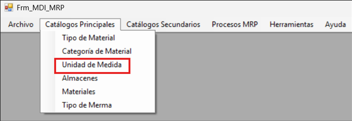
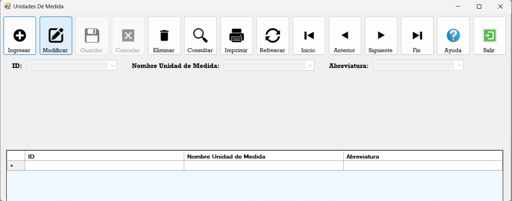
A continuación se describen los botones disponibles en la barra de navegación del módulo:
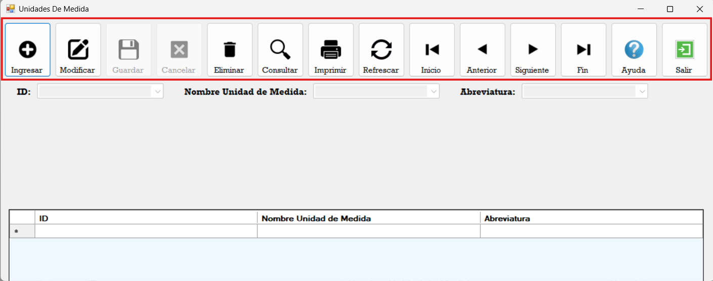
Ingresar: Permite agregar un nuevo registro al catálogo.
Modificar: Permite editar el dato del registro que se encuentre
seleccionado en ese momento.
Guardar: Se habilita únicamente al presionar el botón
Ingresar o al activar el modo de edición mediante el botón
Modificar.
Cancelar: Permite salir del modo de ingreso sin guardar ningún
cambio.
Eliminar: Permite eliminar el registro seleccionado del
catálogo.
Consultar: Ejecuta consultas inteligentes dentro del módulo.
Imprimir: Genera un reporte de las unidades de medida registradas
en el sistema.
Refrescar: Actualiza la vista del Data Grid View. Es útil cuando
se ha ingresado o modificado un registro y los cambios no se reflejan de
inmediato.
Inicio / Anterior / Siguiente / Fin: Son controles de navegación
del Data Grid View para desplazarse entre los registros.
Ayuda: Abre la guía de ayuda en la que usted se encuentra en este
momento.
Salir: Cierra el módulo de Unidades de Medida y regresa a la
ventana anterior del sistema.
En esta sección se visualizan todas las unidades de medida que han sido registradas en el sistema:
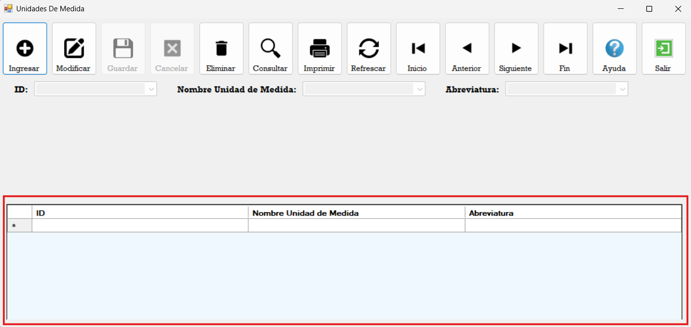
Para agregar una nueva unidad de medida, se deberá presionar el botón Ingresar. Al hacerlo, se habilitarán los botones Guardar y Cancelar, mientras que los botones Eliminar, Consultar e Imprimir permanecerán deshabilitados, ya que en este modo el sistema está destinado exclusivamente al ingreso de datos.
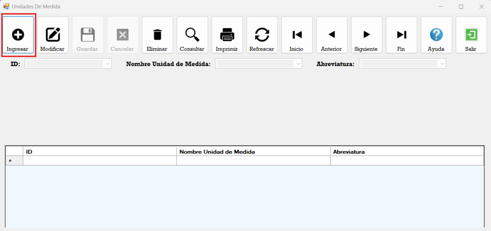
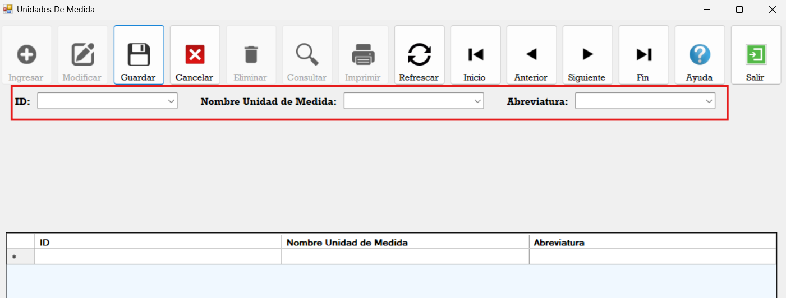
Asimismo, se habilitarán los campos correspondientes para que se pueda ingresar la información del nuevo registro:
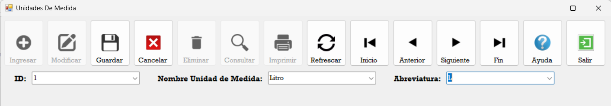
Una vez completados los campos, se deberá presionar el botón Guardar para registrar la nueva unidad de medida:
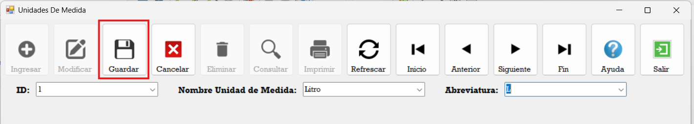
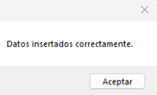
El nuevo registro podrá visualizarse en el Data Grid View de la parte inferior:
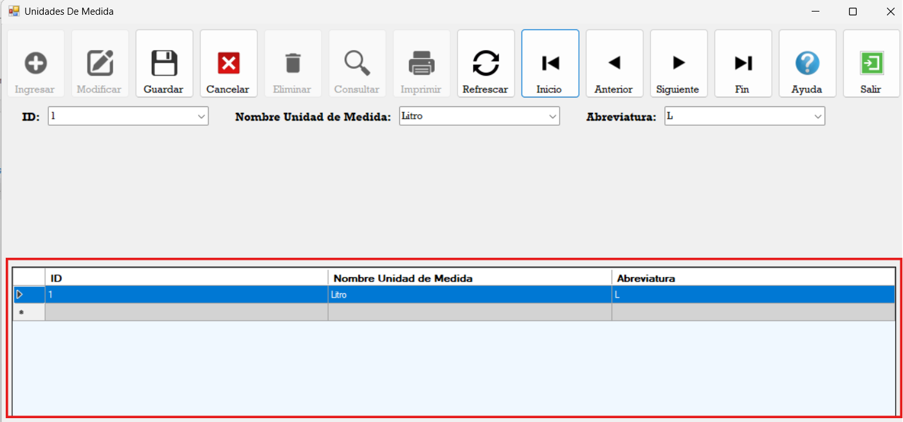
Para modificar un registro existente, primero se deberá seleccionar el registro deseado en el Data Grid View y posteriormente presionar el botón Modificar:
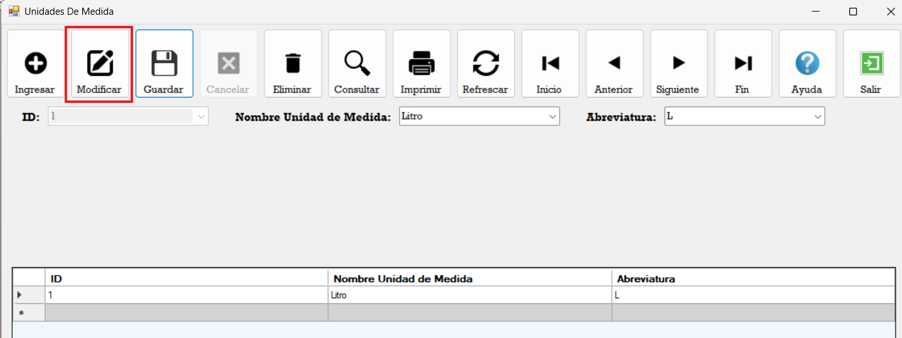
Al presionar el botón, el sistema entrará en modo de edición, permitiendo modificar el nombre o la abreviatura del registro:
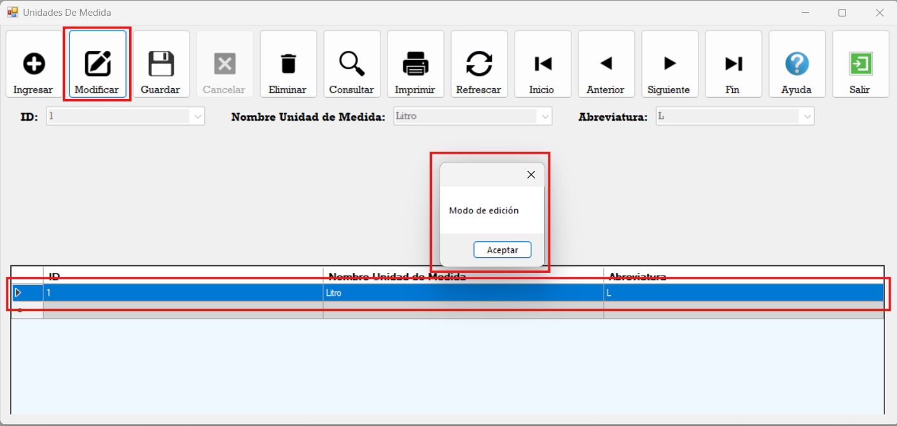
En el siguiente ejemplo se modificó únicamente el nombre del registro:
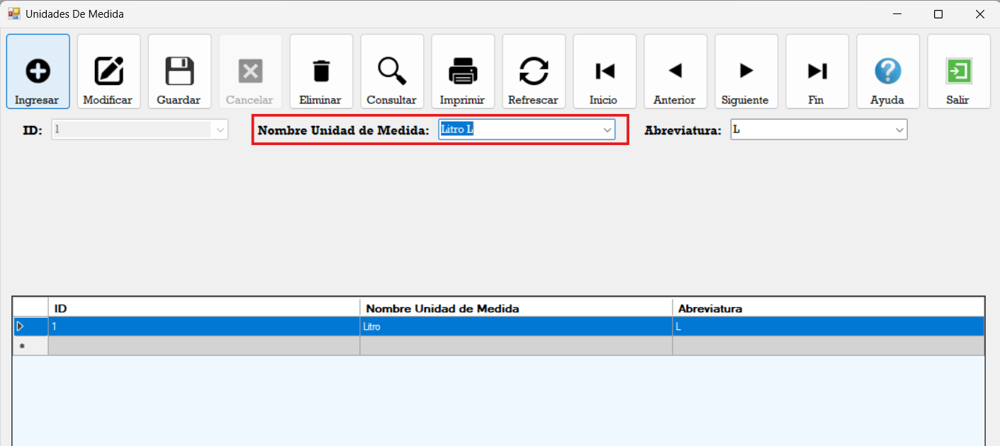
Una vez realizados los cambios, se presiona el botón Guardar para confirmar la modificación:
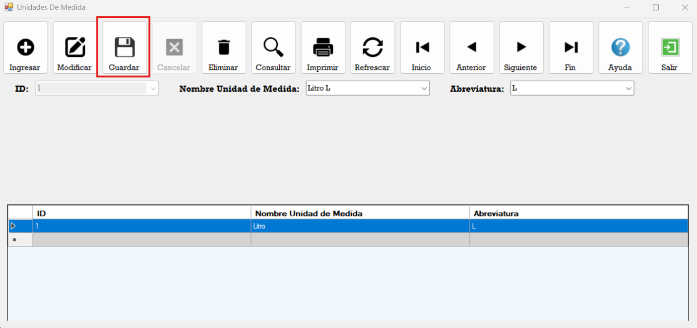
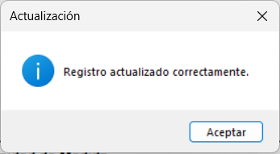
El registro actualizado podrá visualizarse en el Data Grid View:
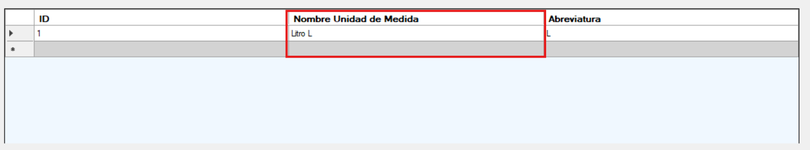
Para eliminar un registro, se deberá seleccionar el elemento a eliminar en el Data Grid View y presionar el botón Eliminar, En el siguiente ejemplo se agregó previamente el registro de Kilogramos para ilustrar el proceso:
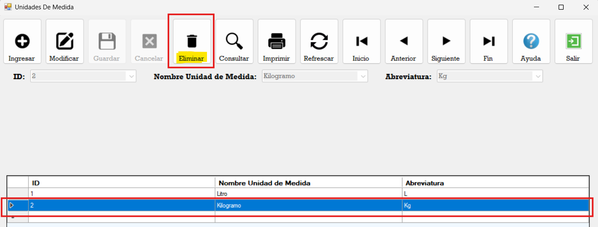
El sistema mostrará un mensaje de confirmación antes de proceder con la eliminación, y posteriormente el registro será eliminado.
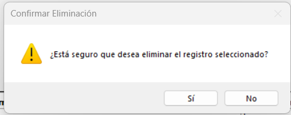
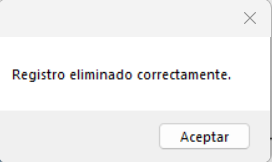
Al presionar el botón Imprimir, el sistema generará un reporte con todas las unidades de medida existentes en el catálogo:
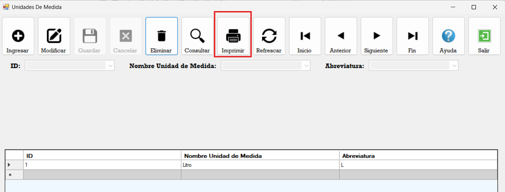
En caso de que algunos registros no se carguen de inmediato, se podrá presionar el botón Actualizar ubicado dentro del propio reporte para cargar la información completa:
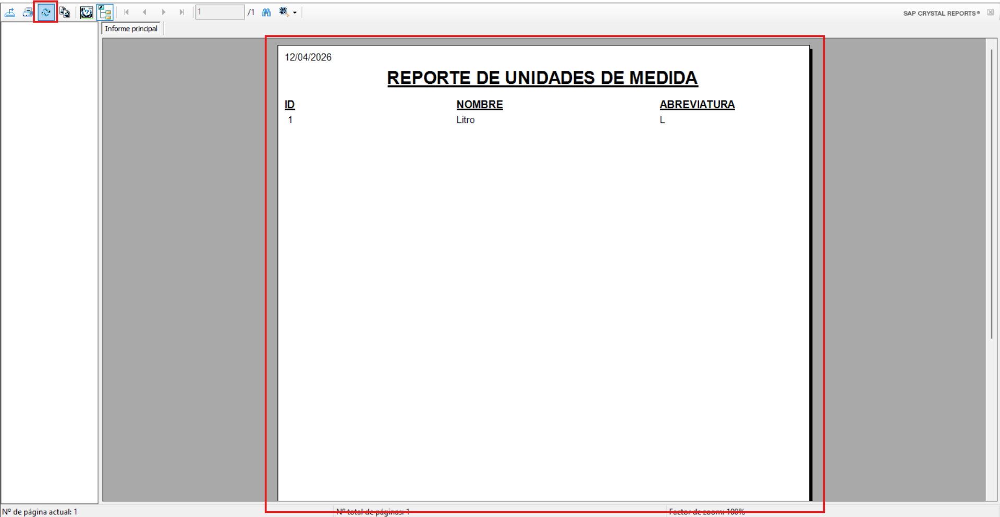